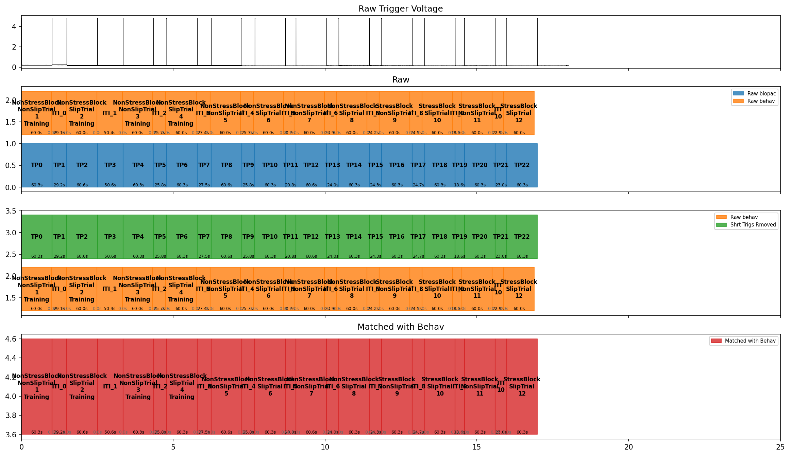

Crane Output Checks (Interval QC Plot)
This is the extra check specific to Crane, on top of EDA & SCRs (read that first if you haven't already — it applies here too).
Before physiology data can be summarised trial by trial, the pipeline has to work out exactly when each trial happened. This page explains the QC (quality control) image the pipeline produces so you can sanity-check that it got the timing right.
What is a "trial interval"?
A trial interval is just a named span of time in the experiment — a
start second and an end second, with a label saying what happened during
that span (e.g. "Baseline", or a specific trial's name). Physiology data
gets sliced up using these: "give me only the signal between this
interval's start and end" (see EDA & SCRs for what happens to
that sliced-up signal next).
Why this exists
Trial timing comes from two places that don't share a clock:
- The physiology recording — a hardware voltage pulse sent at each trial boundary during recording. This is the physiology data's own timeline.
- The behaviour file — trial start/end times on the task software's own clock.
These two clocks can drift apart over a session (see Clock Drift Notes). Before physiology data can be sliced into per-trial intervals, the pipeline has to detect, clean, and match trial boundaries against behaviour trial times. It produces the QC image below so a human can check the result before trusting it.
Example

(Generated from a synthetic, clean example participant — no real participant data was used to produce this plot.)
Row by row
| Row | Title | What it shows |
|---|---|---|
| 1 | Raw Trigger Voltage | The raw analog trigger channel, straight from the recording. Each spike is one voltage pulse marking a trial boundary. |
| 2 | Raw | Blue (Raw biopac): every trigger interval detected before any cleanup. Orange (Raw behav): trial intervals straight from the behaviour file, labelled by block/trial name, with training and ITI (inter-trial interval) gaps shown. |
| 3 | (unlabelled) | Green (Shrt Trigs Rmoved) vs. the same orange Raw behav row: trigger intervals after known-false/too-short triggers are dropped, gaps are filled, and a spurious extra trigger from a delayed experiment start is removed. Compare against the row above/below to check the cleaned trigger count now roughly matches the behaviour file. |
| 4 | Matched with Behav | Red: the final result — trigger intervals corrected for clock drift and labelled with their actual trial names from the behaviour file. This is what physiology processing actually uses. |
Going further
Row 1's "Raw Trigger Voltage" is also where a known open issue lives: voltage dips below ~4.8V are suspected to cause spurious double triggers, but aren't flagged on this plot yet — see item 15 in Next Steps.
When behaviour data is missing or doesn't match
Sometimes the behaviour file is missing, incomplete, or its trial times can't be matched against the trigger pulses. When that happens, the pipeline doesn't stop — it falls back to processing physiology using only the raw trigger timing (see Pipeline Rules in For Contributors for the underlying "missing files don't stop the pipeline" rule). On this plot, that shows up as rows 1–3 looking normal, but the fourth "Matched with Behav" row staying empty — worth a second look before trusting that participant's output at face value, since it means trial names couldn't be attached to the timing, only raw, unlabelled intervals.
Going further
A dedicated, interactive version of this QC step — for flagging questionable trigger/behaviour matches by hand instead of only viewing a static image after the fact — is being planned; see Interactive QC Plan.
Why FOH doesn't need any of this
All of the above — trigger detection, false-trigger filtering, clock-drift correction, behaviour matching — exists because Crane's physiology and behaviour data come from two independent clocks that have to be reconciled after the fact. FOH's recordings don't have that problem: every stream in an FOH recording is already time-aligned to one shared clock at recording time, so there's no drift to correct and no equivalent of this plot for FOH.
Next: For Contributors — if you're curious how any of this is actually built, or planning to change the code and share that change back.